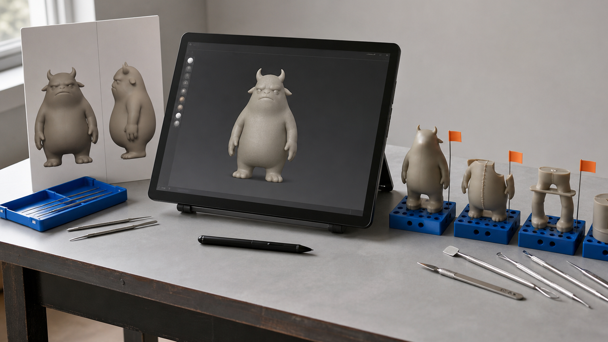
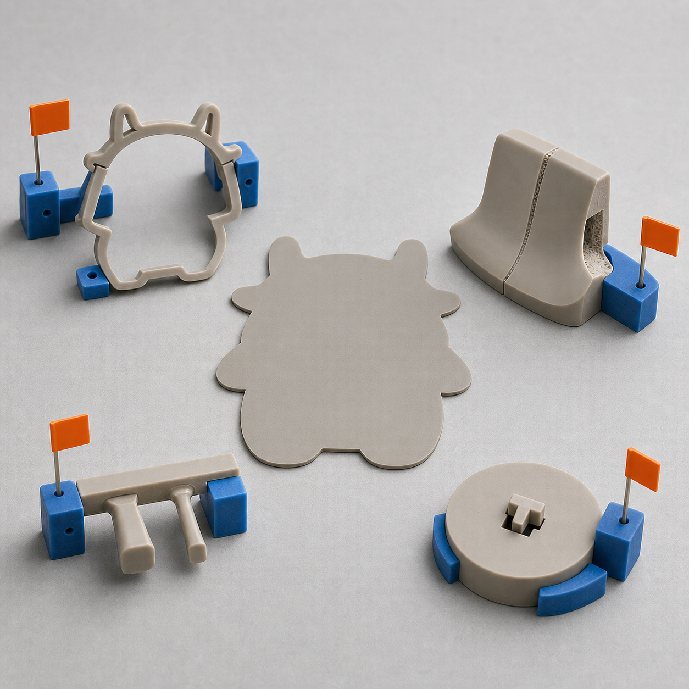
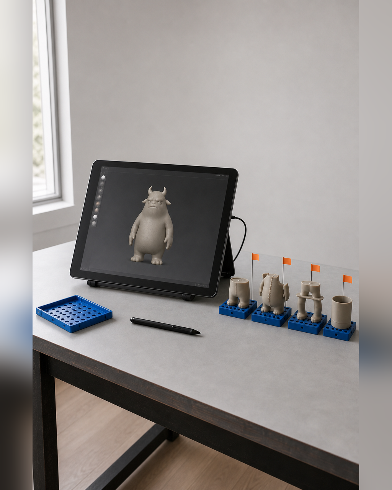

Nomad 修模，五天里最关键的 4 个动作
AI 三维初模可以快速给出轮廓和体块，但它常把二维画面里的遮挡、夸张比例和悬空配件直接固化进网格。模型在屏幕上看起来接近原图，并不等于比例稳定、表面连续、连接可靠，也不等于它能按真实尺寸切片和打印。 五天项目中的 Nomad 修模因此不是自由增加细节，而是把有限时间放在会影响下一阶段的结构问题上。若先雕刻纹理、褶皱和装饰，再处理重心、薄片、重叠与拆件，前面的精细工作可能因整体变形或返工全部失效，并把问题带到打印队列。

具体问题
AI 三维初模可以快速给出轮廓和体块，但它常把二维画面里的遮挡、夸张比例和悬空配件直接固化进网格。模型在屏幕上看起来接近原图，并不等于比例稳定、表面连续、连接可靠，也不等于它能按真实尺寸切片和打印。
五天项目中的 Nomad 修模因此不是自由增加细节，而是把有限时间放在会影响下一阶段的结构问题上。若先雕刻纹理、褶皱和装饰，再处理重心、薄片、重叠与拆件，前面的精细工作可能因整体变形或返工全部失效，并把问题带到打印队列。
核心判断
修模优先级应由“是否影响识别、稳定、制造与装配”决定，而不是由画面中哪个部位最吸引注意决定。五天里最关键的四类动作是：调整大比例与轮廓，清理破面和不合理重叠，加厚或简化悬空薄弱结构，最后完成主体、底座和配件的拆件与装配预判。
每次动作后都要回到真实尺寸、主要视角和用途复核。轮廓调整要保住角色辨识点；表面修正不能只把瑕疵磨平；加厚要检查是否改变外形；拆件要同时考虑接缝、定位、支撑和后处理。只有这些关系有记录，修正后的模型才具备进入 Gate 2 的条件。
步骤或标准
下面四项按从整体到局部、从形象到制造的顺序执行。每项完成后保存新版本，并在问题清单中记录通过、待修或降级。
- 调整比例与轮廓：在正面、侧面和主要观看角度比较视觉输入，先修头身比、四肢长度、姿态、底座接触和整体重心；检查缩略视图下核心轮廓是否仍可辨认。
- 清理破面、穿插与重叠：逐处检查主体、手部、衣褶、道具和配件的交界，区分需要融合的结构与必须保留的接缝；旋转模型确认没有隐藏穿插、空洞或无法解释的表面。
- 加厚并简化薄弱结构：按预计实体尺寸检查耳尖、发片、披风、手指、细杆和悬空件；对不足以稳定制造的部位执行加厚、合并、缩短、贴近主体或改为局部样，并再次核对辨识度。
- 拆件并预判装配：明确主体、底座和配件的拆分边界，检查接缝是否避开关键正面、定位关系是否唯一、支撑和工具能否进入、装配后重心是否稳定；随后导出受控测试版进入 Gate 2。
常见错误
以下错误会把修模时间消耗在不可验证的表面进度上。
- 一开始就雕刻皮肤、纹理和小装饰，却没有锁定比例与姿态；后果是整体调整时细节被拉伸或删除，返工范围扩大。
- 用平滑操作覆盖所有破面和穿插，却不判断哪些结构应融合、哪些应分开；后果是轮廓变软、接缝消失，仍可能留下内部重叠和不可打印区域。
- 只在屏幕放大状态看薄片和细杆，不按真实尺寸检查；后果是模型视觉上完整，切片或取件时却出现支撑困难、断裂和细节丢失。
- 最后才考虑底座、拆件与装配；后果是接缝落在主要视角、支撑无处落置，或打印后无法稳定定位和拼接。
与五天课程的关系
这一主题主要对应 Day 2：AI 三维初模与 Nomad 人工修模。Day 1 的 Gate 1 已锁定用途、视觉输入、预计尺寸以及主 / 备 / 降级方案；Day 2 按比例轮廓、表面关系、薄弱结构和拆件装配四类动作修正主模型，并在 Gate 2 检查封闭、厚度、连接、重心、真实尺寸和可支撑性。
Gate 2 通过后，下一阶段是 Day 3 的切片、打印与灰模验证。实体样若暴露断裂、变形、细节丢失、重心或装配问题，应回到受控源模型继续修正，而不是直接进入 Day 4 的涂装和包装表达。
事实 / 案例 / 完成度边界
本文依据课程公开的 Day 2 修模任务和 Gate 2 检查项整理。当天四张计划图片中的数位修模工位、模型截面、结构试片和装配夹具都属于课程方法示意，不是学员案例、真实委托成果，也不代表课堂、修模、打印或结课已经发生。真实案例只有在来源、授权、版本和完成状态可核验时才能单独标注；示意图不能替代真实案例。
五天内的目标是完成影响第一版闭环的关键修正，并形成可继续迭代的受控模型、GLB、STL 与问题记录。具体完成度受起点、网格质量、结构复杂度、尺寸、设备、打印排程和修正次数影响；课程不承诺人人完成商业级精修、一次打印成功、正式包装印刷、批量生产、正式展览、授权成交或销售。
报名入口
如果你已有 IP / 角色资产，可以在报名资料中说明现有原画、角色设定或三维文件，以及最希望保留的轮廓、预计实体尺寸和当前结构问题；不需要先独自完成全部修模。
如果你只有想法、草图或初步设定，也可以如实说明故事、参考方向、希望做成的物品和现有设备。两类起点都会先在 Day 1 锁定范围，再进入 Day 2 的三维初模与人工修正。公开报名地址：https://wj.qq.com/s2/27296919/9499/


长期招生｜青岛｜3–5 天短训｜评估后预约跟班｜每班最多 10 人。查看当前学习方案与费用
填写报名资料 →